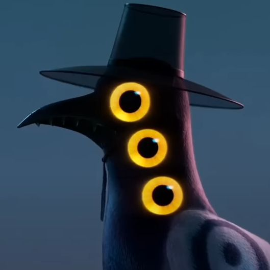

Sussie is a unique six-eyed magpie and the loyal companion of Derpy. Together, they form one of the most memorable duos, often accompanying Jinu throughout the story and bringing moments of humor and charm to even the most serious situations.
Unlike ordinary magpies, Sussie has six glowing eyes, giving it an unusual and mysterious appearance. Despite this, it is playful, curious, and often mischievous. One of it's favorite activities is stealing Derpy's small gat, a traditional Korean hat that Jinu made especially for the tiger. The hat rarely stays on Derpy's head for long before Sussie finds a way to take it.
Like Derpy, Sussie's design is inspired by Hojak-do (호작도), traditional Korean folk paintings from the Joseon period that depict tigers and magpies together. In Korean culture, magpies are often associated with good news, good fortune, and positive messages. Through Sussie and Derpy, the film pays tribute to an important artistic tradition and a beloved symbol of Korean folklore.